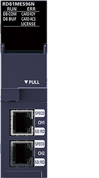
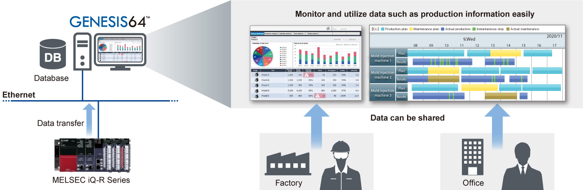
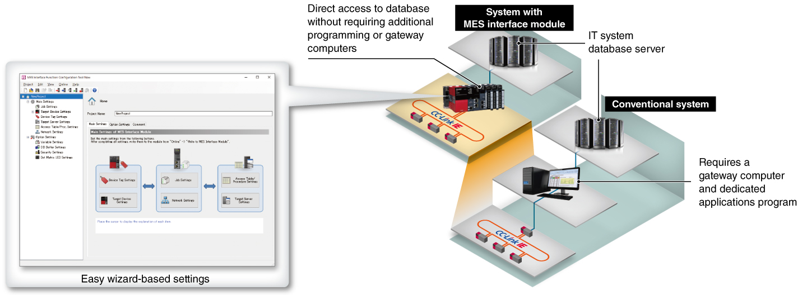

Controllers MELSEC iQ-R Series Fitur Produk -Informasi lanjutan-

Modul antarmuka MES
Basis data merupakan persyaratan wajib dalam kebutuhan manufaktur saat ini. Modul antarmuka MES memungkinkan konektivitas langsung antara basis data sistem TI dan sistem pengontrol, yang memungkinkan instruksi produksi dan pengumpulan data.

Fitur<sup>Pemanfaatan data yang mudah dari basis data</sup>
- Pemanfaatan data yang mudah
- Berbagi data dengan mudah
- Data dalam modul antarmuka MES dapat disimpan dalam basis data
- Data dalam basis data dapat dengan mudah divisualisasikan melalui kompatibilitas yang luas dengan SCADA software GENESIS64™ dan dengan demikian, analisis data dapat digunakan untuk pengendalian mutu
- Data dalam basis data dapat dibagikan dengan kantor maupun tempat produksi, sehingga memungkinkan orang-orang di posisi yang berbeda untuk memeriksa pada saat yang sama

Konfigurasi sistem yang mudah tanpa program khusus
- Akses langsung ke basis data
- Pengurangan biaya perawatan
- Modul ini memungkinkan konektivitas langsung antara server basis data TI dan pengontrol yang dapat diprogram, sehingga menghilangkan kebutuhan akan komputer gateway atau program khusus dan menyederhanakan konfigurasi sistem
- Modul antarmuka MES mengakses server basis data sebagai klien, sehingga menghilangkan poling yang tidak perlu dan mengurangi beban pada jaringan, pengontrol yang dapat diprogram, dan sistem TI
- Perawatan perangkat keras yang lebih sedikit diperlukan, sehingga mengurangi biaya sistem secara keseluruhan karena modul ini tangguh bahkan di lingkungan industri yang keras dibandingkan dengan komputer

Spesifikasi<sup>Spesifikasi modul antarmuka MES</sup>
| Item | RD81MES96N |
|---|---|
| Database connection | |
| Supported database*1 | Oracle® Database, Microsoft® SQL Server®, Microsoft® Access®, MySQL®, PostgreSQL®, MariaDB® |
| Database communication type | SELECT, INSERT, UPDATE, DELETE, Multi-SELECT, Multi-INSERT*1*2, STORED PROCEDURE*1*2 |
| Number of field settings per project | Max. 65536 fields |
| Accessible CPU module*1 | MELSEC iQ-R, MELSEC-Q, MELSEC-L, MELSEC iQ-F, MELSEC-F Series |
| Data sampling interval | |
| High-speed data sampling | 1…9 ms, 1…9 × 10 ms, 1…9 × 100 ms,1…60 s |
| General data sampling (s) | 0.1…0.9, 1…3600 |
- *1.Untuk rinciannya, silakan lihat “Panduan Pengguna Modul Antarmuka MELSEC iQ-R MES (Startup) (SH‑081422ENG).”
- *2.Didukung saat digunakan dengan Basis Data Oracle®, SQL Server®, MySQL®, PostgreSQL®, dan MariaDB®.